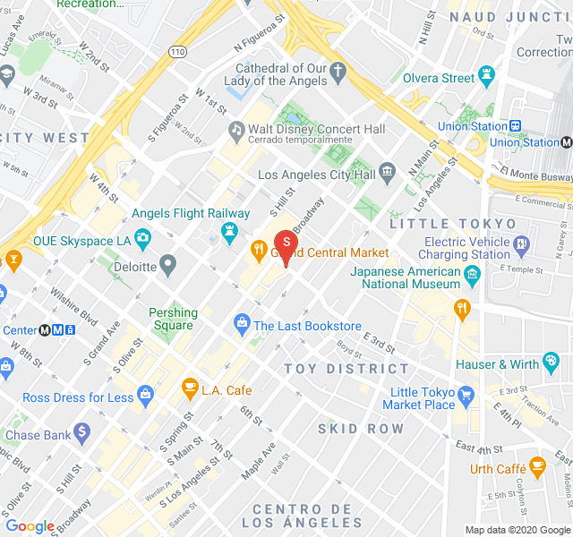
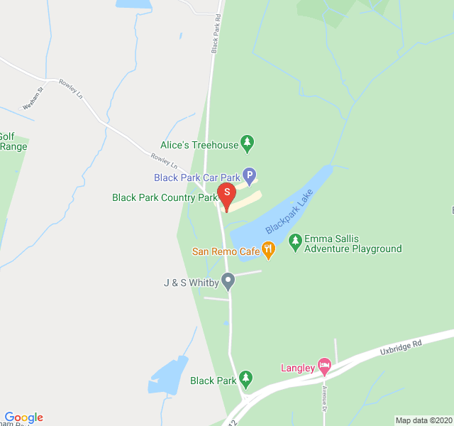
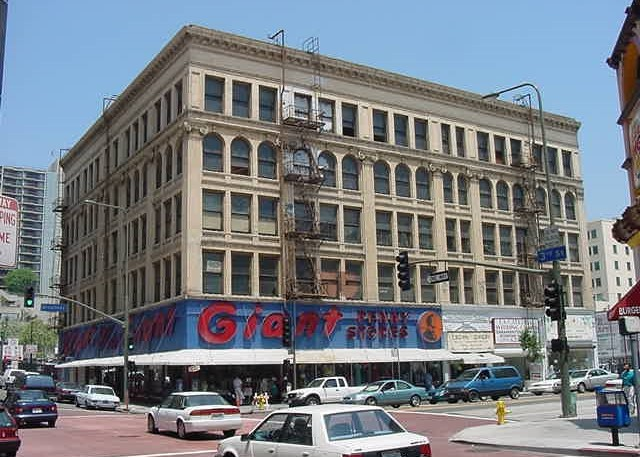
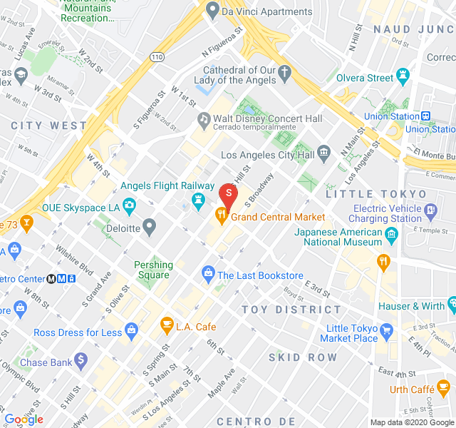

Donde se rodó
Anque la mayoria de la pelicula se grabó en los estudios de Warner Bros en California,algunas de las escenas mas emblematicas se grabaron el localizaciones exteriores como estas:
  En esta ubicación, el Bradbury Building de Los Ángeles, se grabaron los exteriores y el hall del piso de Sebastian |
  La secuencia del unicornio fue rodada la primera semana de enero de 1982 en el Black Park (Buckinghamshire), un parque cercano a los Shepperton Studios, estudios donde se grabó la posproducción. |
|   Otras locaciones en la ciudad de Los Ángeles incluyen el Irvine-Byrne Building —conocido posteriormente como Pan American Lofts— para el interior del Hotel Yukon, la Union Station como comisaría de policía, el 2nd Street Tunnel, y la Ennis House, donde se rodó el exterior de la casa de Deckard y que sirvió de inspiración para recrear los interiores de la misma. |